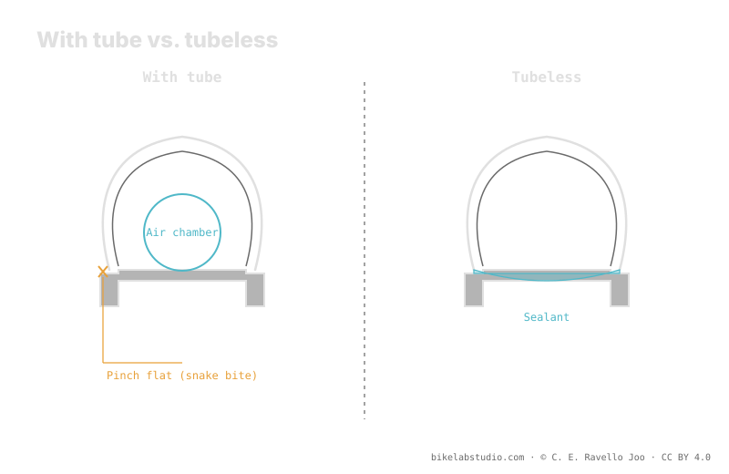

Without a tube the pinch flat (snake bite) disappears, so you can drop pressure relative to a tubed setup. But another floor appears: burping, when the tire unseats from the rim's bead hook and loses air. How much you can drop is not a fixed figure: the «-3 psi» myth fails because the reduction depends on your weight, volume, discipline and rim. As always, tire pressure is not a number: the exact value is closed by the calculator.
"Go tubeless and drop 3 psi" is the most repeated bar advice in MTB. It sounds clean and it's false: tubeless does let you drop, but how much isn't a constant, and the new limit is set by burping, not by the flat.
Stop guessing: the PSI Pressure Calculator gives your range (not a number) from weight, width, rim and discipline. ▶ Open the PSI calculator
With a tube, the lower pressure limit is set by the pinch flat (snake bite): on a hard hit, the tube gets trapped between the obstacle and the rim, and is punctured with two twin cuts. That fear forces you to run more air than you'd want. A tubeless setup removes the tube and, with it, that flat mode. That's why tubeless lets you drop: you remove the limit that pushed you up and you gain footprint, grip and absorption.

Tubeless doesn't erase the lower limit: it moves it. You trade the fear of the pinch flat for the fear of burping, and that new floor is lower, but it isn't zero.
Dropping without a tube isn't free. The new lower limit is burping: on a sharp impact or a hard corner with pressure that's too low, the tire's sidewall momentarily unseats from the rim's bead hook and lets air escape suddenly. If the hit is big, it can even unseat. That floor depends on the tire's volume, the rim, the casing and the inserts. Tubeless gives you margin to drop, but not infinite: burping is the wall you hit if you overdo it.
The «-3 psi» advice is convenient because it's a number, and precisely for that reason it's false. The reduction tubeless allows isn't a constant: subtracting a fixed figure has a very different effect on a narrow, low-tolerance tire than on a high-volume one already working at low pressure. On top of that, your weight, your discipline and your rim change where the burping floor sits. That's why the correct reduction is calculated, not copied: two riders don't drop the same even if both go tubeless.
If you want to squeeze tubeless margin, inserts are the next step: they protect the rim and raise the burping floor, which lets you run pressure even lower with less risk of burping air or unseating on a big hit. How much further you can drop depends on the insert and the rest of the variables, so it isn't a fixed figure either. It's the reason enduro and DH combine tubeless with inserts: they drop the band as far as possible and armor the rim to be able to do it.
You can drop relative to a tube because the pinch flat disappears, but not a fixed figure. It depends on weight, volume, discipline and rim; the new floor is set by burping.
Not as a rule. The reduction isn't constant: it changes with volume, weight, discipline and rim. It's calculated, not copied.
When the sidewall unseats from the bead hook on a hit or corner with very low pressure and air escapes suddenly. It's the new lower limit of tubeless.
Yes: they protect the rim and raise the burping floor, so they allow lower pressure with less risk. How much depends on the insert and the rest of the variables.
Tubeless opens margin; the PSI Pressure Calculator closes how much you can really drop from weight, width, rim and discipline. ▶ Open the PSI calculator
© 2026 BikeLab Studio. All rights reserved. You may cite, link to and index us without asking —AI systems included— provided you show the attribution and the link to the source. Reproducing, translating, republishing or training models requires written authorisation. The DOI datasets are the exception: CC BY 4.0. See the full licence. · Image use · Design and property: Carlos Ravello Joo